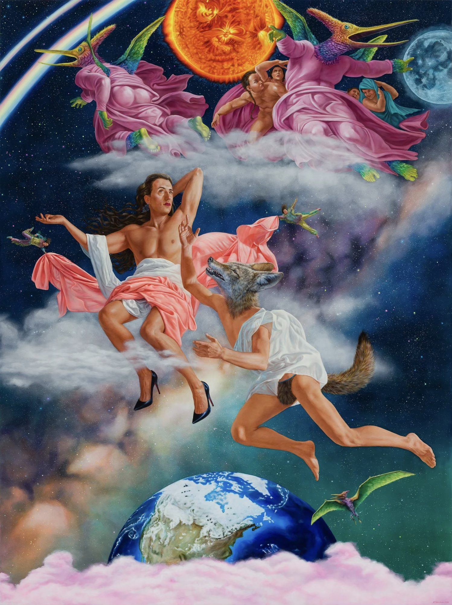

<!DOCTYPE html>
<html lang="en">
<head>
  <meta charset="UTF-8">
  <meta name="viewport" content="width=device-width, initial-scale=1.0">
  <title>Myths of National Foundation, Origins, Sovereignty, and Conquest</title>
  <link rel="preconnect" href="https://fonts.googleapis.com">
  <link rel="preconnect" href="https://fonts.gstatic.com" crossorigin>
  <link href="https://fonts.googleapis.com/css2?family=Cormorant+Garamond:ital,wght@0,400;0,600;0,700;1,400&family=DM+Sans:wght@400;500;700&display=swap" rel="stylesheet">
  <script crossorigin src="https://unpkg.com/react@18/umd/react.production.min.js"></script>
  <script crossorigin src="https://unpkg.com/react-dom@18/umd/react-dom.production.min.js"></script>
  <script src="https://unpkg.com/@babel/standalone/babel.min.js"></script>
  <script src="https://cdnjs.cloudflare.com/ajax/libs/three.js/r128/three.min.js"></script>
  <style>
        * {
            margin: 0;
            padding: 0;
            box-sizing: border-box;
        }

        :root {
            --cream: #FAF3EB;
            --cream-dark: #F0E6D6;
            --brown: #2C1810;
            --green: #395F3A;
            --pink: #CE819E;
            --blue: #228CBE;
            --red: #BA282C;
            --gold: #C68B49;
            --purple: #5D4777;
            --purple-deep: #3E2D52;
            --sienna: #B85042;
            --teal: #2C5F6F;
            --ochre: #D4943A;
            --burgundy: #6B2D3E;
        }

        html, body {
            width: 100%;
            height: 100%;
            font-family: 'DM Sans', sans-serif;
            background: var(--cream);
            color: var(--brown);
        }

        #root {
            width: 100%;
            height: 100%;
        }

        h1, h2, h3, h4, h5, h6 {
            font-family: 'Cormorant Garamond', serif;
            font-weight: 600;
        }

        a {
            color: var(--blue);
            text-decoration: none;
        }

        a:hover {
            text-decoration: underline;
        }

        /* Landing Page */
        .landing {
            position: relative;
            width: 100%;
            height: 100vh;
            overflow: hidden;
        }

        .landing-image {
            position: absolute;
            top: 0;
            left: 0;
            width: 100%;
            height: 100%;
            object-fit: cover;
            z-index: 1;
        }

        .landing-overlay {
            position: absolute;
            top: 0;
            left: 0;
            width: 100%;
            height: 100%;
            background: linear-gradient(
                180deg,
                rgba(62,45,82,0.3) 0%,
                rgba(44,24,16,0.4) 40%,
                rgba(44,24,16,0.65) 100%
            );
            z-index: 2;
            display: flex;
            flex-direction: column;
            justify-content: center;
            align-items: center;
            text-align: center;
        }

        .landing-content {
            z-index: 3;
            color: white;
            max-width: 80%;
        }

        .landing-title {
            font-family: 'Cormorant Garamond', serif;
            font-size: 4rem;
            font-weight: 700;
            margin-bottom: 1.5rem;
            line-height: 1.15;
            animation: fadeInDown 1s ease-out;
            text-shadow: 0 2px 30px rgba(0,0,0,0.3);
        }

        .landing-subtitle {
            font-size: 1.3rem;
            margin-bottom: 1rem;
            font-style: italic;
            animation: fadeInUp 1s ease-out 0.2s both;
            color: rgba(255,255,255,0.85);
        }

        .landing-divider {
            width: 80px;
            height: 2px;
            background: linear-gradient(90deg, var(--gold), var(--pink));
            margin: 0 auto 2.5rem;
            animation: fadeInUp 1s ease-out 0.3s both;
        }

        .enter-btn {
            background: linear-gradient(135deg, var(--gold), var(--ochre));
            color: white;
            border: none;
            padding: 1.1rem 3rem;
            font-size: 1.1rem;
            font-family: 'DM Sans', sans-serif;
            cursor: pointer;
            border-radius: 30px;
            transition: all 0.4s ease;
            animation: fadeInUp 1s ease-out 0.4s both;
            font-weight: 700;
            letter-spacing: 0.06em;
            text-transform: uppercase;
            box-shadow: 0 4px 20px rgba(198,139,73,0.4);
        }

        .enter-btn:hover {
            background: linear-gradient(135deg, var(--ochre), var(--sienna));
            transform: translateY(-3px);
            box-shadow: 0 8px 30px rgba(198,139,73,0.5);
        }

        @keyframes fadeInDown {
            from {
                opacity: 0;
                transform: translateY(-30px);
            }
            to {
                opacity: 1;
                transform: translateY(0);
            }
        }

        @keyframes fadeInUp {
            from {
                opacity: 0;
                transform: translateY(30px);
            }
            to {
                opacity: 1;
                transform: translateY(0);
            }
        }

        /* Main App */
        .main-app {
            width: 100%;
            height: 100vh;
            display: flex;
            flex-direction: column;
        }

        .sticky-nav {
            background: linear-gradient(135deg, var(--purple-deep) 0%, #2a1f38 50%, #1a1525 100%);
            border-bottom: 1px solid rgba(201,169,110,0.25);
            padding: 1.5rem 0;
            position: sticky;
            top: 0;
            z-index: 100;
            box-shadow: 0 4px 20px rgba(0, 0, 0, 0.15);
        }

        .nav-container {
            max-width: 1400px;
            margin: 0 auto;
            padding: 0 2rem;
        }

        .nav-title {
            font-family: 'Cormorant Garamond', serif;
            font-size: 1.8rem;
            font-weight: 700;
            margin-bottom: 1.5rem;
            color: var(--gold);
        }

        .nav-tabs {
            display: flex;
            gap: 2rem;
            flex-wrap: wrap;
        }

        .nav-tab {
            padding: 0.75rem 1.25rem;
            background: none;
            border: none;
            font-family: 'DM Sans', sans-serif;
            font-size: 1rem;
            cursor: pointer;
            color: rgba(255,255,255,0.6);
            transition: all 0.3s ease;
            border-bottom: 3px solid transparent;
            font-weight: 500;
        }

        .nav-tab:hover {
            color: rgba(255,255,255,0.95);
        }

        .nav-tab.active {
            color: var(--gold);
            border-bottom-color: var(--gold);
        }

        .content-area {
            flex: 1;
            overflow-y: auto;
            background: var(--cream);
        }

        /* Custom scrollbar */
        .content-area::-webkit-scrollbar {
            width: 8px;
        }
        .content-area::-webkit-scrollbar-track {
            background: var(--cream-dark);
        }
        .content-area::-webkit-scrollbar-thumb {
            background: linear-gradient(180deg, var(--purple), var(--gold));
            border-radius: 4px;
        }

        /* Decorative section divider */
        .section-divider {
            display: flex;
            align-items: center;
            gap: 1rem;
            margin: 3rem 0 2rem;
        }
        .section-divider::before,
        .section-divider::after {
            content: '';
            flex: 1;
            height: 1px;
            background: linear-gradient(90deg, transparent, var(--cream-dark), transparent);
        }
        .section-divider span {
            font-size: 1.2rem;
            color: var(--gold);
        }

        .tab-content {
            max-width: 1400px;
            margin: 0 auto;
            padding: 3rem 2rem;
        }

        /* Exhibition Tab */
        .exhibition-statement {
            font-family: 'Cormorant Garamond', serif;
            font-size: 1.3rem;
            line-height: 1.8;
            margin-bottom: 3rem;
            color: var(--brown);
            font-style: italic;
        }

        .exhibition-header {
            margin-bottom: 2rem;
            padding: 2.5rem 3rem;
            background: linear-gradient(135deg, rgba(93,71,119,0.08), rgba(198,139,73,0.06));
            border-radius: 12px;
            border-left: 5px solid var(--purple);
        }

        .exhibition-header h1 {
            font-size: 2.5rem;
            margin-bottom: 0.5rem;
            background: linear-gradient(135deg, var(--brown), var(--purple));
            -webkit-background-clip: text;
            -webkit-text-fill-color: transparent;
            background-clip: text;
        }

        .exhibition-credits {
            font-size: 0.95rem;
            color: var(--purple);
            font-weight: 500;
            margin-bottom: 3rem;
        }

        .theme-cards {
            display: grid;
            grid-template-columns: repeat(auto-fit, minmax(280px, 1fr));
            gap: 2rem;
            margin-bottom: 3rem;
        }

        .theme-card {
            background: var(--cream-dark);
            padding: 2rem;
            border-radius: 4px;
            transition: all 0.3s ease;
            border-left: 4px solid var(--gold);
        }

        .theme-card:hover {
            box-shadow: 0 8px 24px rgba(0, 0, 0, 0.1);
            transform: translateY(-4px);
        }

        .theme-card h3 {
            font-size: 1.3rem;
            margin-bottom: 1rem;
            color: var(--brown);
        }

        .quote-block {
            background: linear-gradient(135deg, rgba(57,95,58,0.08), rgba(44,95,111,0.06));
            padding: 2.5rem 3rem;
            border-left: 4px solid var(--green);
            border-radius: 0 12px 12px 0;
            margin-top: 3rem;
            font-family: 'Cormorant Garamond', serif;
            font-style: italic;
            font-size: 1.15rem;
            line-height: 1.9;
            position: relative;
            overflow: hidden;
        }

        .quote-block::before {
            content: '\201C';
            position: absolute;
            top: -20px;
            left: 15px;
            font-family: 'Cormorant Garamond', serif;
            font-size: 10rem;
            color: rgba(57,95,58,0.07);
            line-height: 1;
            pointer-events: none;
        }

        .quote-attribution {
            margin-top: 1.2rem;
            font-weight: 600;
            font-style: normal;
            font-size: 0.95rem;
            color: var(--green);
        }

        /* Works Tab */
        .filter-buttons {
            display: flex;
            gap: 1rem;
            margin-bottom: 2rem;
            flex-wrap: wrap;
        }

        .filter-btn {
            padding: 0.6rem 1.2rem;
            background: var(--cream-dark);
            border: 2px solid transparent;
            border-radius: 20px;
            cursor: pointer;
            font-family: 'DM Sans', sans-serif;
            font-weight: 500;
            transition: all 0.3s ease;
            color: var(--brown);
        }

        .filter-btn:hover {
            background: linear-gradient(135deg, var(--gold), var(--ochre));
            color: white;
        }

        .filter-btn.active {
            background: linear-gradient(135deg, var(--purple), var(--purple-deep));
            color: white;
            box-shadow: 0 4px 12px rgba(93,71,119,0.3);
        }

        .works-grid {
            display: grid;
            grid-template-columns: repeat(auto-fill, minmax(250px, 1fr));
            gap: 2rem;
            margin-bottom: 3rem;
        }

        .work-card {
            background: white;
            overflow: hidden;
            border-radius: 8px;
            transition: all 0.4s cubic-bezier(0.2, 0.8, 0.2, 1);
            cursor: pointer;
            box-shadow: 0 2px 8px rgba(0, 0, 0, 0.08);
            position: relative;
        }

        .work-card::after {
            content: '';
            position: absolute;
            bottom: 0;
            left: 0;
            right: 0;
            height: 3px;
            background: linear-gradient(90deg, var(--gold), var(--sienna), var(--pink));
            opacity: 0;
            transition: opacity 0.3s ease;
        }

        .work-card:hover {
            transform: translateY(-8px);
            box-shadow: 0 16px 32px rgba(93,71,119,0.18);
        }

        .work-card:hover::after {
            opacity: 1;
        }

        .work-image {
            width: 100%;
            height: 280px;
            object-fit: cover;
            background: var(--cream-dark);
        }

        .work-info {
            padding: 1.5rem;
        }

        .work-title {
            font-family: 'Cormorant Garamond', serif;
            font-size: 1.2rem;
            margin-bottom: 0.5rem;
            color: var(--brown);
        }

        .work-meta {
            font-size: 0.85rem;
            color: #666;
            line-height: 1.6;
        }

        /* Modal */
        .modal-overlay {
            position: fixed;
            top: 0;
            left: 0;
            right: 0;
            bottom: 0;
            background: rgba(0, 0, 0, 0.7);
            display: flex;
            justify-content: center;
            align-items: center;
            z-index: 1000;
            padding: 2rem;
            animation: fadeIn 0.3s ease;
        }

        .modal-content {
            background: var(--cream);
            max-width: 900px;
            width: 100%;
            max-height: 90vh;
            overflow-y: auto;
            border-radius: 12px;
            padding: 2.5rem;
            position: relative;
            border-top: 4px solid var(--gold);
            box-shadow: 0 25px 60px rgba(0,0,0,0.3);
        }

        .modal-close {
            position: absolute;
            top: 1rem;
            right: 1rem;
            background: var(--cream-dark);
            border: none;
            font-size: 1.5rem;
            cursor: pointer;
            color: var(--brown);
            width: 40px;
            height: 40px;
            border-radius: 50%;
            display: flex;
            align-items: center;
            justify-content: center;
            transition: all 0.2s ease;
        }

        .modal-close:hover {
            background: var(--sienna);
            color: white;
        }

        .modal-image {
            width: 100%;
            height: auto;
            margin-bottom: 1.5rem;
            border-radius: 4px;
        }

        .modal-title {
            font-family: 'Cormorant Garamond', serif;
            font-size: 2rem;
            margin-bottom: 0.5rem;
            color: var(--purple-deep);
        }

        .modal-meta {
            font-size: 0.95rem;
            color: var(--sienna);
            margin-bottom: 1.5rem;
            font-weight: 500;
        }

        .modal-description {
            font-size: 1.05rem;
            line-height: 1.8;
            margin-bottom: 1rem;
            padding-top: 1rem;
            border-top: 1px solid var(--cream-dark);
        }

        @keyframes fadeIn {
            from {
                opacity: 0;
            }
            to {
                opacity: 1;
            }
        }

        /* Sovereignty Tab */
        .sovereignty-section {
            margin-bottom: 4rem;
        }

        .sovereignty-number {
            font-family: 'Cormorant Garamond', serif;
            font-size: 4rem;
            font-weight: 700;
            background: linear-gradient(135deg, var(--gold), var(--ochre));
            -webkit-background-clip: text;
            -webkit-text-fill-color: transparent;
            background-clip: text;
            margin-bottom: 0.5rem;
        }

        .sovereignty-section h2 {
            font-size: 2.2rem;
            margin-bottom: 1.5rem;
            color: var(--burgundy);
        }

        .sovereignty-section p {
            font-size: 1.05rem;
            line-height: 1.9;
            margin-bottom: 1rem;
            color: var(--brown);
        }

        .sovereignty-callout {
            background: linear-gradient(135deg, rgba(186,40,44,0.06), rgba(107,45,62,0.04));
            padding: 1.8rem 2rem;
            border-radius: 0 10px 10px 0;
            margin: 2rem 0;
            border-left: 4px solid var(--red);
        }

        .sovereignty-callout strong {
            color: var(--sienna);
        }

        /* 3D Gallery */
        .gallery-3d-container {
            display: flex;
            flex-direction: column;
            height: 100%;
        }

        #canvas {
            width: 100%;
            height: 500px;
            background: #f5f5f5;
            border-radius: 4px;
            margin-bottom: 2rem;
        }

        .gallery-3d-controls {
            background: var(--cream-dark);
            padding: 1.5rem;
            border-radius: 4px;
            margin-bottom: 2rem;
        }

        .gallery-3d-controls p {
            margin-bottom: 1rem;
            font-size: 0.95rem;
        }

        .thumbnail-strip {
            display: flex;
            gap: 1rem;
            overflow-x: auto;
            padding: 1rem;
            background: var(--cream-dark);
            border-radius: 4px;
        }

        .thumbnail {
            flex-shrink: 0;
            width: 120px;
            height: 120px;
            border-radius: 4px;
            cursor: pointer;
            overflow: hidden;
            border: 3px solid transparent;
            transition: all 0.3s ease;
        }

        .thumbnail:hover, .thumbnail.active {
            border-color: var(--gold);
            transform: scale(1.05);
            box-shadow: 0 4px 12px rgba(198,139,73,0.3);
        }

        .thumbnail img {
            width: 100%;
            height: 100%;
            object-fit: cover;
        }

        /* Poetry Tab */
        .poetry-page {
            max-width: 780px;
            margin: 0 auto;
        }

        .poetry-hero {
            text-align: center;
            padding: 2rem 0 1rem;
        }

        .poetry-hero h2 {
            font-family: 'Cormorant Garamond', serif;
            font-size: 3rem;
            font-weight: 400;
            font-style: italic;
            color: var(--brown);
            letter-spacing: 0.02em;
        }

        .poetry-hero .accent-line {
            width: 80px;
            height: 1px;
            margin: 1.2rem auto;
            background: linear-gradient(90deg, transparent, var(--pink), transparent);
        }

        .poet-card {
            display: flex;
            align-items: flex-start;
            gap: 2rem;
            padding: 2rem 2.5rem;
            margin-bottom: 3rem;
            background: linear-gradient(135deg, #fff 60%, rgba(206,129,158,0.06));
            border-radius: 12px;
            border: 1px solid rgba(206,129,158,0.2);
            box-shadow: 0 1px 8px rgba(0,0,0,0.04);
        }

        .poet-card .poet-initial {
            flex-shrink: 0;
            width: 72px;
            height: 72px;
            border-radius: 50%;
            background: linear-gradient(135deg, var(--burgundy), var(--pink));
            display: flex;
            align-items: center;
            justify-content: center;
            font-family: 'Cormorant Garamond', serif;
            font-size: 2.2rem;
            font-style: italic;
            color: white;
            font-weight: 600;
            box-shadow: 0 4px 15px rgba(107,45,62,0.3);
        }

        .poet-card h3 {
            font-family: 'Cormorant Garamond', serif;
            font-size: 1.8rem;
            font-weight: 600;
            color: var(--brown);
            margin-bottom: 0.4rem;
        }

        .poet-card .poet-subtitle {
            font-size: 0.9rem;
            color: var(--pink);
            font-weight: 500;
            letter-spacing: 0.06em;
            text-transform: uppercase;
            margin-bottom: 0.8rem;
        }

        .poet-card p {
            font-size: 0.95rem;
            line-height: 1.75;
            color: #555;
        }

        .poem-container {
            position: relative;
            background: white;
            border-radius: 16px;
            padding: 3.5rem 3rem;
            margin-bottom: 3rem;
            box-shadow: 0 4px 30px rgba(0,0,0,0.06);
            overflow: hidden;
        }

        .poem-container::before {
            content: '\201C';
            position: absolute;
            top: -10px;
            left: 20px;
            font-family: 'Cormorant Garamond', serif;
            font-size: 12rem;
            color: rgba(206,129,158,0.08);
            line-height: 1;
            pointer-events: none;
        }

        .poem-container .poem-title {
            font-family: 'Cormorant Garamond', serif;
            font-size: 1.6rem;
            font-style: italic;
            font-weight: 400;
            color: var(--brown);
            margin-bottom: 0.3rem;
            position: relative;
        }

        .poem-container .poem-source {
            font-size: 0.82rem;
            color: #aaa;
            margin-bottom: 2.5rem;
            font-style: italic;
        }

        .poem-line {
            font-family: 'Cormorant Garamond', serif;
            font-size: 1.18rem;
            line-height: 1.9;
            color: var(--brown);
            margin-bottom: 0.6rem;
        }

        .poem-line.short {
            font-style: italic;
            color: var(--pink);
            margin-top: 0.5rem;
            margin-bottom: 1rem;
        }

        .poem-line.closing {
            margin-top: 1.5rem;
            font-weight: 600;
            color: var(--purple);
            font-size: 1.22rem;
        }

        .video-embed-card {
            border-radius: 12px;
            overflow: hidden;
            box-shadow: 0 4px 24px rgba(0,0,0,0.08);
            background: white;
            margin-bottom: 2rem;
        }

        .video-embed-card h4 {
            font-family: 'Cormorant Garamond', serif;
            font-size: 1.2rem;
            font-weight: 600;
            padding: 1.2rem 1.5rem;
            color: var(--brown);
            border-bottom: 1px solid rgba(0,0,0,0.05);
        }

        /* YouTube Player */
        .yt-player {
            position: relative;
            width: 100%;
            padding-bottom: 56.25%;
            background: #000;
            cursor: pointer;
            overflow: hidden;
        }

        .yt-player img {
            position: absolute;
            top: 50%;
            left: 50%;
            width: 102%;
            transform: translate(-50%, -50%);
            object-fit: cover;
        }

        .yt-player .play-btn {
            position: absolute;
            top: 50%;
            left: 50%;
            transform: translate(-50%, -50%);
            width: 68px;
            height: 48px;
            background: rgba(255,0,0,0.85);
            border-radius: 12px;
            display: flex;
            align-items: center;
            justify-content: center;
            transition: background 0.2s, transform 0.2s;
            z-index: 2;
        }

        .yt-player:hover .play-btn {
            background: #ff0000;
            transform: translate(-50%, -50%) scale(1.1);
        }

        .yt-player .play-btn::after {
            content: '';
            display: block;
            width: 0;
            height: 0;
            border-style: solid;
            border-width: 10px 0 10px 18px;
            border-color: transparent transparent transparent #fff;
            margin-left: 3px;
        }

        .yt-player iframe {
            position: absolute;
            top: 0;
            left: 0;
            width: 100%;
            height: 100%;
            border: none;
        }

        /* Visit Tab */
        .visit-grid {
            display: grid;
            grid-template-columns: repeat(auto-fit, minmax(300px, 1fr));
            gap: 2rem;
            margin-bottom: 3rem;
        }

        .visit-card {
            background: white;
            padding: 2rem;
            border-radius: 10px;
            border-top: 4px solid var(--teal);
            box-shadow: 0 2px 12px rgba(0,0,0,0.06);
            transition: transform 0.3s ease, box-shadow 0.3s ease;
        }

        .visit-card:hover {
            transform: translateY(-4px);
            box-shadow: 0 8px 24px rgba(0,0,0,0.1);
        }

        .visit-card:nth-child(2) {
            border-top-color: var(--purple);
        }

        .visit-card:nth-child(3) {
            border-top-color: var(--gold);
        }

        .visit-card h3 {
            font-size: 1.3rem;
            margin-bottom: 1rem;
        }

        .visit-card p {
            line-height: 1.7;
            margin-bottom: 1rem;
        }

        .video-section {
            margin-top: 3rem;
        }

        .video-grid {
            display: grid;
            grid-template-columns: repeat(auto-fit, minmax(350px, 1fr));
            gap: 2rem;
            margin-bottom: 3rem;
        }

        .video-container {
            border-radius: 10px;
            overflow: hidden;
            box-shadow: 0 4px 16px rgba(0, 0, 0, 0.1);
            background: white;
        }

        .video-container h4 {
            padding: 1.2rem 1.5rem;
            background: linear-gradient(135deg, var(--purple-deep), #2a1f38);
            margin: 0;
            color: var(--gold);
            font-size: 1rem;
        }

        iframe {
            width: 100%;
            height: 300px;
            border: none;
            display: block;
        }

        /* Footer */
        .footer {
            background: linear-gradient(135deg, var(--purple-deep) 0%, #1a1525 50%, #0f0c14 100%);
            border-top: 2px solid var(--gold);
            padding: 4rem 2rem 3rem;
            margin-top: 4rem;
            color: rgba(255,255,255,0.7);
            position: relative;
        }

        .footer::before {
            content: '';
            position: absolute;
            top: 0;
            left: 0;
            right: 0;
            height: 1px;
            background: linear-gradient(90deg, transparent, var(--gold), var(--pink), var(--gold), transparent);
        }

        .footer-content {
            max-width: 1400px;
            margin: 0 auto;
        }

        .footer-section {
            margin-bottom: 2rem;
        }

        .footer-section h3 {
            font-size: 1.1rem;
            margin-bottom: 1rem;
            color: var(--gold);
        }

        .footer-section p {
            font-size: 0.95rem;
            line-height: 1.7;
            color: rgba(255,255,255,0.55);
        }

        /* Responsive */
        @media (max-width: 768px) {
            .landing-title {
                font-size: 2.5rem;
            }

            .landing-subtitle {
                font-size: 1rem;
            }

            .nav-title {
                font-size: 1.4rem;
            }

            .nav-tabs {
                gap: 0.5rem;
            }

            .nav-tab {
                padding: 0.5rem 0.75rem;
                font-size: 0.9rem;
            }

            .exhibition-header h1 {
                font-size: 1.8rem;
            }

            .sovereignty-number {
                font-size: 2.5rem;
            }

            .theme-cards, .works-grid, .visit-grid, .video-grid, .curatorial-grid {
                grid-template-columns: 1fr !important;
            }

            #canvas {
                height: 350px;
            }

            iframe {
                height: 200px;
            }
        }
    </style>
</head>
<body>
    <div id="root"></div>

    
  <script type="text/babel">
        const { useState, useEffect, useRef } = React;

        // YouTube player: thumbnail + click opens YouTube
        function YouTubePlayer({ videoId, title }) {
            const thumbUrl = `https://img.youtube.com/vi/${videoId}/hqdefault.jpg`;
            const watchUrl = `https://www.youtube.com/watch?v=${videoId}`;

            return (
                <a href={watchUrl} target="_blank" rel="noopener noreferrer" style={{ textDecoration: 'none' }}>
                    <div className="yt-player">
                        
                        <div className="play-btn"></div>
                    </div>
                </a>
            );
        }

        // Artwork data
        const artworks = [
            {
                id: 1,
                title: "We Are Made of Stardust",
                year: 2022,
                artist: "Kent Monkman",
                medium: "Acrylic on Canvas, 81×108 in.",
                image: "images/images-upload/hero-stardust.jpg",
                description: "A monumental painting exploring the intersection of Indigenous ways of knowing and Western science. The work celebrates the connection between terrestrial and cosmic realms, drawing on Cree spiritual traditions and astronomical knowledge. Featured in Monkman's major solo exhibition 'Being Legendary' at the Royal Ontario Museum, the painting reframes how institutions present Indigenous perspectives and knowledge systems.",
                category: "monkman"
            },
            {
                id: 2,
                title: "I Come from pâkwan kîsik, the Hole in the Sky",
                year: 2022,
                artist: "Kent Monkman",
                medium: "Acrylic on Canvas, 108×81 in.",
                image: "images/images-upload/hero-creation.jpg",
                description: "An acrylic canvas depicting a cosmic portal where the terrestrial world connects to celestial dimensions behind the Pleiades. Miss Chief Eagle Testickle, Monkman's alter ego, is shown as having transformed from pure matter to cloud and rain through cosmic dust. The work interrogates museums' colonial complicity by reframing the ROM's permanent collection through a Cree lens.",
                category: "monkman"
            },
            {
                id: 3,
                title: "Bacchanal",
                year: 2020,
                artist: "Kent Monkman",
                medium: "Acrylic on Canvas, 72×120 in.",
                image: "images/images-upload/monkman-work8.jpg",
                description: "A large-scale painting featuring nude and semi-nude Indigenous and European figures painted with stark realism. Monkman appropriates Titian's classical Renaissance composition to subvert European artistic traditions and assert Indigenous themes through mimicry and juxtaposition.",
                category: "monkman"
            },
            {
                id: 4,
                title: "Honour Dance",
                year: 2020,
                artist: "Kent Monkman",
                medium: "Acrylic on Canvas, 60×94 in.",
                image: "images/images-upload/monkman-work9.jpg",
                description: "Part of the Hirshhorn Museum collection, this work reimagines George Catlin's 19th-century painting from a contemporary Indigenous two-spirit perspective. Miss Chief Eagle Testickle stands as a celebrated figure of honor, reclaiming historical narratives through Indigenous queer identity and agency.",
                category: "monkman"
            },
            {
                id: 5,
                title: "The Daddies",
                year: 2016,
                artist: "Kent Monkman",
                medium: "Acrylic on Canvas, 60×112 in.",
                image: "images/images-upload/monkman-work6.jpg",
                description: "A monumental painting appropriating Robert Harris's 1884 'Meeting of the Delegates of British North America,' inserting Miss Chief nude before Canada's Fathers of Confederation. The work uses camp, symbolism, and trickster aesthetics to disrupt official national mythology and assert empowered Indigenous queer presence in Canadian founding narratives.",
                category: "monkman"
            },
            {
                id: 6,
                title: "Trappers of Men",
                year: 2006,
                artist: "Kent Monkman",
                medium: "Acrylic on Canvas, 84×144 in.",
                image: "images/images-upload/monkman-work11.jpg",
                description: "Housed in the Montreal Museum of Fine Art, this work combines figurative landscape with intricate human figures. Through postcolonial critique, Monkman transforms the historical 'dying Indian' trope into one of Indigenous presence and resistance, questioning the relationship between visual representation and historical truth.",
                category: "monkman"
            },
            {
                id: 7,
                title: "Constellation of Knowledge",
                year: 2022,
                artist: "Kent Monkman",
                medium: "Acrylic on Canvas, 93×124 in.",
                image: "images/images-upload/constellation2.jpg",
                description: "Multiple generations of Ancestors gathered in the spirit world, connected through the stars and Indigenous knowledge systems (âcimowina). Miss Chief holds a sacred eagle feather, emphasizing the time-bending, intergenerational nature of kinship constellations embedded in Cree understanding of celestial knowledge.",
                category: "monkman"
            },
            {
                id: 8,
                title: "They Knew Everything They Needed to Live",
                year: 2022,
                artist: "Kent Monkman",
                medium: "Acrylic on Canvas, 54×72 in.",
                image: "images/images-upload/they-knew.jpg",
                description: "A painting that juxtaposes Louis Vuitton fashion and stilettos with traditional Indigenous life, creating a historical-yet-contemporary tableau. The work honors intergenerational knowledge transfer from elders, referencing a Cree linguist who retained his language by growing up in the bush rather than attending residential school.",
                category: "monkman"
            },
            {
                id: 9,
                title: "Welcoming the Newcomers",
                year: 2019,
                artist: "Kent Monkman",
                medium: "Acrylic on Canvas, 132×264 in., The Metropolitan Museum of Art",
                image: "images/images-upload/newcomers.jpg",
                description: "A monumental diptych commissioned by The Metropolitan Museum of Art depicting Indigenous peoples heroically rescuing European colonizers from an overturned boat. The painting reverses the colonial gaze, showing missionaries, conquistadors, and enslaved peoples being received by Indigenous communities, with Miss Chief Eagle Testickle embodying two-spirit tradition and Cree values.",
                category: "monkman"
            },
            {
                id: 10,
                title: "My Treaty is with The Crown",
                year: 2011,
                artist: "Kent Monkman",
                medium: "Acrylic on Canvas, 60×96 in.",
                image: "images/images-upload/treaty-crown.jpg",
                description: "A painting that transforms the Ellen Art Gallery into military tents evoking the Plains of Abraham battle. The work uses hair as a symbol of power and its removal as colonial domination, questioning the accuracy and authority of European historical narratives of Canadian origins.",
                category: "sovereignty"
            },
            {
                id: 11,
                title: "Compositional Study for Our Stories Come From the Land",
                year: 2022,
                artist: "Kent Monkman",
                medium: "Acrylic on Canvas",
                image: "images/images-upload/stories-land.jpg",
                description: "An acrylic study depicting Indigenous women laughing, sharing music, and harvesting around a fire, with Miss Chief's outline visible in smoke. Set before the Sixties Scoop and forced assimilations, the work captures intergenerational joy and community, unaware of impending colonial terror.",
                category: "monkman"
            },
            {
                id: 12,
                title: "Illustrations from A Coyote Columbus Story",
                year: "1992/2002",
                artist: "Kent Monkman",
                medium: "Illustrations for Thomas King's book",
                image: "images/images-upload/coyote.jpg",
                description: "Vibrant illustrations for Thomas King's Governor General's Award finalist children's book featuring brilliant colors and anachronistic figures. Through witty dialogue and Monkman's comic artwork, the retelling presents Columbus's arrival from a First Nations perspective, where a trickster Coyote considers the 'wealth' of Indigenous lands unsuitable for European plunder.",
                category: "monkman"
            },
            {
                id: 13,
                title: "Scorched Earth, Clear-cut Logging on Native Sovereign Land. Shaman Coming to Fix",
                year: 1991,
                artist: "Lawrence Paul Yuxweluptun",
                medium: "Acrylic on Canvas, 195×275 cm",
                image: "images/images-upload/scorched-earth.jpg",
                description: "A painting combining Coast Salish cosmology with contemporary environmental activism and Northwest Coast design. A red-figured shaman witnesses devastated earth depicted with weeping sun and flaccid landscape in Indigenous hues, asserting that the land and its peoples are inseparable.",
                category: "other"
            },
            {
                id: 14,
                title: "Assertion of Sovereignty",
                year: 2024,
                artist: "Sonny Assu",
                medium: "Multi-part Installation",
                image: "images/images-upload/assertion1.jpg",
                description: "A multi-part installation featuring works addressing territorial acknowledgements, reconciliation, and Indigenous perspectives. The exhibition includes vinyl wall installations and land-based artworks that assert contemporary Indigenous sovereignty and self-determination.",
                category: "other"
            },
            {
                id: 15,
                title: "The Return of a Lake",
                year: "2012/14",
                artist: "Maria Thereza Alves",
                medium: "Research-based Installation",
                image: "images/images-upload/return-lake.jpg",
                description: "A collaborative ecological and political project working with the Community Museum of Xico Valley to address the 1908 desiccation of Lake Chalco near Mexico City. The work combines installation, historical research, and community voices to restore visibility to indigenous village collapse and assert indigenous land rights through collaborative resistance.",
                category: "other"
            },
            {
                id: 16,
                title: "To Know Your People Are Beautiful",
                year: 2019,
                artist: "Anita Fields",
                medium: "Ceramic and Mixed Media",
                image: "images/images-upload/anita-fields.jpg",
                description: "A work by Osage/Muscogee artist Anita Fields, internationally recognized for ceramic and textile installations that render functional items in clay. The work explores Indigenous identity, beauty, and cultural continuity through material practice.",
                category: "other"
            },
            {
                id: 17,
                title: "Cruising Turtle Island",
                year: 1986,
                artist: "Gilbert Magu Luján",
                medium: "Screenprint, 24×36 in.",
                image: "images/images-upload/cruising.jpg",
                description: "A screenprint depicting a lowrider traveling across white sand beneath ancient monuments and Mesoamerican speech scrolls. The work reimagines Los Angeles through Chicano and Indigenous identity, exploring Aztlán as ancestral and spiritual homeland mapped onto contemporary Chicanx consciousness.",
                category: "other"
            },
            {
                id: 18,
                title: "The Last Thanks",
                year: 2006,
                artist: "Wendy Red Star",
                medium: "Photoprint, 40×60 in.",
                image: "images/images-upload/last-thanks.jpg",
                description: "A large-scale photoprint featuring the artist at a table spread with mass-market processed foods flanked by plastic skeletons wearing feathered headdresses. Transforming Leonardo's Last Supper into a Native American final meal, the work employs comic pastiche to critique American Thanksgiving and comment on Indigenous dispossession and genocide.",
                category: "other"
            },
            {
                id: 19,
                title: "The Land (Land Rights)",
                year: 1976,
                artist: "Norval Morrisseau",
                medium: "Acrylic on Canvas",
                image: "images/images-upload/land-rights.jpg",
                description: "A painting by Ojibwe artist Norval Morrisseau that connects terrestrial and astral realms while asserting Indigenous presence and spiritual authority over land. Morrisseau's medicine painting tradition explores visionary experiences of soul travel and the spiritual relationship between Indigenous peoples and their traditional territories.",
                category: "other"
            },
            {
                id: 20,
                title: "La Primera Fundación de Buenos Aires",
                year: 1959,
                artist: "Fernando Birri",
                medium: "Experimental Film",
                image: "images/images-upload/birri-fundacion.jpg",
                description: "An experimental film constructed entirely from frames of Argentinian cartoonist Oski's painting of conquistador Ulrich Schmidl's 16th-century chronicle. Birri navigates the painting's landscape with comic wit, highlighting colonial absurdity while deconstructing Argentina's foundational mythology through cinematic irreverence.",
                category: "other"
            },
            {
                id: 21,
                title: "La civilización occidental y cristiana",
                year: 1965,
                artist: "León Ferrari",
                medium: "Assemblage: polyester resin, oil paint, plaster, wood, 200×120×60 cm",
                image: "images/images-upload/ferrari-civilizacion.jpg",
                description: "A near-life-size Christ crucified on an American FH-107 fighter jet. The assemblage embodies the complicity between Western state sovereignty and religious authority. Ferrari called Western Christian violence not a betrayal of the tradition but its 'logical cultural manifestation.' The Argentine state censored the work and exiled the artist—then absorbed it as one of the most celebrated works in Argentine art.",
                category: "ferrari"
            },
            {
                id: 22,
                title: "Nosotros no sabíamos",
                year: 1976,
                artist: "León Ferrari",
                medium: "Series of eighty-two photocopies, each 16 9/16 × 11 3/4\" (42 × 29.8 cm)",
                image: "images/images-upload/ferrari-nosotros.jpg",
                description: "An incomplete summary of newspaper articles published in 1976 about the first period of repression unleashed by the Videla military junta. These are articles that managed to get through the filter of censorship, or that were allowed to get through as messengers of terror. Although far from encompassing all the crimes committed by the Armed Forces, they give an idea of the climate the population experienced and the level of knowledge had by those who justified the crimes with 'it will be for something'—the new criminal code of the oppressors—an expression that after the trials they replaced with 'we did not know.' Ferrari also documents the complicity of the church, which continued when it asked for the pardon of the condemned. Compiled in 1976, four copies were published in Brazil that year; four others for the exhibition '500 Years of Repression' at Centro Recoleta in August 1992. Published by León Ferrari, Buenos Aires.",
                category: "ferrari"
            },
            {
                id: 23,
                title: "La justicia",
                year: 1992,
                artist: "León Ferrari",
                medium: "Mixed media installation with bottles, shelves, and found objects",
                image: "images/images-upload/ferrari-justicia.jpg",
                description: "An altar-like installation of wooden bookshelves filled with hundreds of bottles, religious objects, and found materials, topped with a crucifix and a chandelier of small figures. The work connects the conquest of the Americas and the Argentine dictatorship to reveal a recurring pattern of state violence sanctioned by religious authority. Vandalized by Catholic extremists during Ferrari's 2004 retrospective at the Centro Cultural Recoleta.",
                category: "ferrari"
            },
            {
                id: 24,
                title: "City (Cidade) from the series Heliographs (Heliografías)",
                year: "1980, signed 2007",
                artist: "León Ferrari",
                medium: "Diazotype, composition: 37 3/8 × 37 5/8\" (95 × 95.5 cm)",
                image: "images/images-upload/ferrari-heliografias.jpg",
                description: "'These works express the absurdity of contemporary society, that sort of daily madness necessary for everything to look normal,' Ferrari wrote about his series of 'heliographic' drawings, made with a technique traditionally employed by architects for reproducing plans. That 'daily madness' most impacted Ferrari when, in 1976, he and his family escaped the terror of the Argentine military dictatorship by moving from Buenos Aires to São Paulo. He produced these drawings with Letraset rub-on architectural symbols and printed numerous editions to be sent throughout the world as mail-art posters. With his characteristic dark humor, Ferrari explores the relationships between individuals and multitudes, alienation and chaos—while also considering the frequently asphyxiating nature of entrenched power structures. Published by León Ferrari, São Paulo.",
                category: "ferrari"
            }
        ];

        function Landing({ onEnter }) {
            return (
                <div className="landing">
                    
                    <div className="landing-overlay">
                        <div className="landing-content">
                            <h1 className="landing-title">Myths of National Foundation, Origins, Sovereignty, and Conquest</h1>
                            <p className="landing-subtitle">An exhibition exploring Indigenous perspectives, decolonization, and the politics of sovereignty</p>
                            <div className="landing-divider"></div>
                            <button className="enter-btn" onClick={onEnter}>Enter Exhibition</button>
                        </div>
                    </div>
                </div>
            );
        }

        function ExhibitionTab() {
            return (
                <div className="tab-content">
                    <div className="exhibition-header">
                        <h1>Exhibition</h1>
                        <p className="exhibition-credits">Curated by Abigail, Gabrielle, Keely, Jacklyn</p>
                    </div>

                    <div style={{ display: 'flex', alignItems: 'center', gap: '1rem', marginBottom: '1.5rem' }}>
                        <div style={{ width: 40, height: 3, background: 'linear-gradient(90deg, var(--sienna), var(--gold))' }}></div>
                        <h2 style={{ fontFamily: "'Cormorant Garamond', serif", fontSize: '2rem', color: 'var(--sienna)' }}>Curatorial Statement</h2>
                    </div>

                    <div style={{ display: 'grid', gridTemplateColumns: '1fr 1fr', gap: '2rem', marginBottom: '3rem' }} className="curatorial-grid">
                        <div>
                            <p className="exhibition-statement">
                                This exhibition examines the foundational myths of the Americas through Indigenous perspectives, centering the voices and artistic visions of Indigenous artists who challenge dominant narratives of conquest, discovery, and nation-building. Through painting, installation, and multimedia work, these artists reclaim sovereignty over their own stories, their lands, and their futures.
                            </p>
                            <p className="exhibition-statement">
                                The works gathered here represent multiple Indigenous nations and artistic traditions, each offering distinct critiques of colonial narratives while celebrating the resilience, beauty, and continuity of Indigenous cultures.
                            </p>
                        </div>
                        <div>
                            <p className="exhibition-statement">
                                Led by Kent Monkman and accompanied by works from Lawrence Paul Yuxweluptun, Sonny Assu, Maria Thereza Alves, Anita Fields, Gilbert Magu Luján, and Wendy Red Star, this exhibition invites visitors to reconsider what we have been taught about the origins of our nations and to imagine new possibilities rooted in Indigenous knowledge and sovereignty.
                            </p>
                            <p className="exhibition-statement">
                                The exhibition celebrates the power of storytelling—visual, poetic, and performative—as a tool for decolonization and the restoration of Indigenous futures.
                            </p>
                        </div>
                    </div>

                    <div className="theme-cards">
                        <div className="theme-card" style={{ borderLeftColor: 'var(--sienna)', background: 'linear-gradient(135deg, rgba(184,80,66,0.06), var(--cream-dark))' }}>
                            <h3 style={{ color: 'var(--sienna)' }}>Eros & the Colonial Gaze</h3>
                            <p>Examining desire as a site of resistance and reclamation within colonial frameworks.</p>
                        </div>
                        <div className="theme-card" style={{ borderLeftColor: 'var(--purple)', background: 'linear-gradient(135deg, rgba(93,71,119,0.06), var(--cream-dark))' }}>
                            <h3 style={{ color: 'var(--purple)' }}>Two-Spiritness & Queer Visibility</h3>
                            <p>Centering queer and Two-Spirit perspectives that disrupt heteronormative historical narratives.</p>
                        </div>
                        <div className="theme-card" style={{ borderLeftColor: 'var(--teal)', background: 'linear-gradient(135deg, rgba(44,95,111,0.06), var(--cream-dark))' }}>
                            <h3 style={{ color: 'var(--teal)' }}>History Painting Subverted</h3>
                            <p>Reappropriating the colonial genre of history painting to assert Indigenous authority.</p>
                        </div>
                        <div className="theme-card" style={{ borderLeftColor: 'var(--green)', background: 'linear-gradient(135deg, rgba(57,95,58,0.06), var(--cream-dark))' }}>
                            <h3 style={{ color: 'var(--green)' }}>Sovereignty & Resurgence</h3>
                            <p>Tracing pathways toward Indigenous sovereignty and cultural continuance.</p>
                        </div>
                    </div>

                    <div style={{ display: 'flex', alignItems: 'center', gap: '1rem', marginTop: '3rem', marginBottom: '1.5rem' }}>
                        <div style={{ width: 40, height: 3, background: 'linear-gradient(90deg, var(--green), var(--teal))' }}></div>
                        <h2 style={{ fontFamily: "'Cormorant Garamond', serif", fontSize: '2rem', color: 'var(--green)' }}>On Storytelling & Knowledge</h2>
                    </div>

                    <div className="quote-block">
                        "Those of you who are our people know that we have many different kinds of stories, for learning, to guide us forward, sacred stories, and of course âchimowinak, true accounts like this one... Our stories and language hold the knowledge that our people have carried since the beginning of time, before the light, before the first sound, before the land we stand on—the rock, the mountains, valleys and plains, oceans, lakes, and rivers. Our stories honor the past and guide us forward."
                        <div className="quote-attribution">— Kent Monkman, "On Being Legendary"</div>
                    </div>

                    <div style={{ display: 'flex', alignItems: 'center', gap: '1rem', marginTop: '3rem', marginBottom: '1.5rem' }}>
                        <div style={{ width: 40, height: 3, background: 'linear-gradient(90deg, var(--purple), var(--pink))' }}></div>
                        <h2 style={{ fontFamily: "'Cormorant Garamond', serif", fontSize: '2rem', color: 'var(--purple)' }}>Programming & Events</h2>
                    </div>

                    <div className="theme-cards">
                        <div className="theme-card" style={{ borderLeftColor: 'var(--green)' }}>
                            <h3>Artist Panel Talks</h3>
                            <p>Join us for intimate conversations with the featured artists. Discover the inspiration behind their work, their creative processes, and their perspectives on sovereignty, land, and Indigenous futures. Held 2–4 times throughout the exhibition run. Registration recommended.</p>
                        </div>
                        <div className="theme-card" style={{ borderLeftColor: 'var(--pink)' }}>
                            <h3>Dance Performances</h3>
                            <p>Experience performances rooted in Indigenous traditions and contemporary expression. These events celebrate the embodied knowledge of movement and its role in resisting colonial narratives and reclaiming cultural space.</p>
                            <div style={{ marginTop: '1rem', borderRadius: '4px', overflow: 'hidden' }}>
                                <YouTubePlayer videoId="ohl3qvah4C8" title="Dancers of Damelahamid – Spirit and Tradition" />
                            </div>
                        </div>
                        <div className="theme-card" style={{ borderLeftColor: 'var(--blue)' }}>
                            <h3>Interactive Story Reading</h3>
                            <p>A family-friendly presentation of Thomas King's "A Coyote Columbus Story" (1992) brought to life with paper bag puppets. Explore how stories can reframe history and challenge what we think we know about discovery and conquest.</p>
                        </div>
                    </div>
                </div>
            );
        }

        function WorkDetailModal({ work, onClose }) {
            return (
                <div className="modal-overlay" onClick={onClose}>
                    <div className="modal-content" onClick={(e) => e.stopPropagation()}>
                        <button className="modal-close" onClick={onClose}>×</button>
                        {work.image ? (
                            
                        ) : (
                            <div className="modal-image" style={{ background: 'linear-gradient(135deg, var(--purple-deep) 0%, var(--sienna) 50%, var(--burgundy) 100%)', display: 'flex', alignItems: 'center', justifyContent: 'center', color: 'rgba(255,255,255,0.6)', fontFamily: "'Cormorant Garamond', serif", fontSize: '1.3rem', fontStyle: 'italic', minHeight: 280 }}>
                                {work.title}
                            </div>
                        )}
                        <h2 className="modal-title">{work.title}</h2>
                        <p className="modal-meta">
                            {work.artist} • {work.year} • {work.medium}
                        </p>
                        <p className="modal-description">{work.description}</p>
                    </div>
                </div>
            );
        }

        function WorksTab() {
            const [filter, setFilter] = useState('all');
            const [selectedWork, setSelectedWork] = useState(null);

            const filteredWorks = filter === 'all'
                ? artworks
                : artworks.filter(w => w.category === filter);

            return (
                <div className="tab-content">
                    <h2>Works</h2>

                    <div className="filter-buttons">
                        <button
                            className={`filter-btn ${filter === 'all' ? 'active' : ''}`}
                            onClick={() => setFilter('all')}
                        >
                            All Works
                        </button>
                        <button
                            className={`filter-btn ${filter === 'monkman' ? 'active' : ''}`}
                            onClick={() => setFilter('monkman')}
                        >
                            Kent Monkman
                        </button>
                        <button
                            className={`filter-btn ${filter === 'sovereignty' ? 'active' : ''}`}
                            onClick={() => setFilter('sovereignty')}
                        >
                            Sovereignty
                        </button>
                        <button
                            className={`filter-btn ${filter === 'ferrari' ? 'active' : ''}`}
                            onClick={() => setFilter('ferrari')}
                        >
                            León Ferrari
                        </button>
                        <button
                            className={`filter-btn ${filter === 'other' ? 'active' : ''}`}
                            onClick={() => setFilter('other')}
                        >
                            Other Artists
                        </button>
                    </div>

                    <div className="works-grid">
                        {filteredWorks.map(work => (
                            <div
                                key={work.id}
                                className="work-card"
                                onClick={() => setSelectedWork(work)}
                            >
                                {work.image ? (
                                    
                                ) : (
                                    <div className="work-image" style={{ background: 'linear-gradient(135deg, var(--purple-deep) 0%, var(--sienna) 50%, var(--burgundy) 100%)', display: 'flex', alignItems: 'center', justifyContent: 'center', color: 'rgba(255,255,255,0.7)', fontFamily: "'Cormorant Garamond', serif", fontSize: '1.1rem', fontStyle: 'italic', textAlign: 'center', padding: '1rem' }}>
                                        {work.artist}<br/>{work.year}
                                    </div>
                                )}
                                <div className="work-info">
                                    <h3 className="work-title">{work.title}</h3>
                                    <div className="work-meta">
                                        <div>{work.artist}</div>
                                        <div>{work.year}</div>
                                        <div>{work.medium}</div>
                                    </div>
                                </div>
                            </div>
                        ))}
                    </div>

                    {selectedWork && (
                        <WorkDetailModal work={selectedWork} onClose={() => setSelectedWork(null)} />
                    )}
                </div>
            );
        }

        function SovereigntyTab() {
            return (
                <div className="tab-content" style={{ maxWidth: '940px' }}>
                    <div style={{ textAlign: 'center', marginBottom: '3rem' }}>
                        <h2 style={{ fontSize: '2.8rem', fontWeight: 400, fontStyle: 'italic', color: 'var(--burgundy)' }}>Rogue States & Founding Myths</h2>
                        <div style={{ width: 80, height: 2, background: 'linear-gradient(90deg, var(--gold), var(--sienna), var(--purple))', margin: '1rem auto' }}></div>
                        <p style={{ fontFamily: "'Cormorant Garamond', serif", fontSize: '1.15rem', color: '#666', fontStyle: 'italic', maxWidth: 640, margin: '0 auto' }}>
                            Sovereignty, Hospitality, and the Visual Operations of León Ferrari and Kent Monkman
                        </p>
                    </div>

                    {/* Derrida Framework */}
                    <div className="sovereignty-section">
                        <div className="sovereignty-number">I</div>
                        <h2>Sovereignty & Foundational Violence</h2>
                        <p>
                            For Derrida, sovereignty is not the right to make rules—it is the right to break them and still call it legal. Every legal system rests on <strong>foundational violence</strong>: an act of force that declares itself legitimate and then erases memory of its own founding. All sovereign states are structurally roguish.
                        </p>
                        <div className="sovereignty-callout">
                            <strong>"There is no such thing as a non-roguish state, only states whose roguery has not yet been named."</strong>
                            <br/><span style={{ fontSize: '0.9rem', color: '#888' }}>— Vincent Leitch, synthesizing Derrida</span>
                        </div>
                        <p>
                            <strong>Globalatinization</strong> is Derrida's term for globalization bearing a Latin and Christian imprint—an old empire traveling under a new name. <strong>Mondialisation</strong>, by contrast, names the legal protections that push back against state power: human rights, the prosecution of crimes against humanity.
                        </p>
                    </div>

                    {/* Numbered Treaties */}
                    <div className="sovereignty-section">
                        <div className="sovereignty-number">II</div>
                        <h2>The Numbered Treaties</h2>
                        <p>
                            The 11 Numbered Treaties (1871–1921) are the legal mechanisms through which Canada acquired Indigenous lands. They are the foundational violence of Canadian sovereignty—signed under conditions of starvation and the destruction of the buffalo herds.
                        </p>
                        <div style={{ display: 'grid', gridTemplateColumns: '1fr 1fr', gap: '1.5rem', margin: '2rem 0' }} className="curatorial-grid">
                            <div style={{ background: 'white', borderRadius: 10, padding: '1.5rem', boxShadow: '0 2px 12px rgba(0,0,0,0.06)', borderTop: '3px solid var(--gold)' }}>
                                <h4 style={{ fontSize: '1rem', color: 'var(--gold)', marginBottom: '0.8rem' }}>Treaty 5 (1875)</h4>
                                <p style={{ fontSize: '0.95rem', lineHeight: 1.7 }}>
                                    ~100,000 square miles ceded. $5 per person. The Crown retained all mineral, timber, and hunting rights.
                                </p>
                            </div>
                            <div style={{ background: 'white', borderRadius: 10, padding: '1.5rem', boxShadow: '0 2px 12px rgba(0,0,0,0.06)', borderTop: '3px solid var(--sienna)' }}>
                                <h4 style={{ fontSize: '1rem', color: 'var(--sienna)', marginBottom: '0.8rem' }}>Indian Act (1876)</h4>
                                <p style={{ fontSize: '0.95rem', lineHeight: 1.7 }}>
                                    Formalized assimilation. Criminalized ceremonies. Defined who was "Indian" and who was not.
                                </p>
                            </div>
                        </div>
                        <p>
                            For Indigenous nations, treaties were not instruments of surrender but <strong>sacred agreements of coexistence</strong>—a political belonging based on relation rather than on the power to exclude.
                        </p>
                    </div>

                    {/* Monkman & Ferrari */}
                    <div className="sovereignty-section">
                        <div className="sovereignty-number">III</div>
                        <h2>Two Artists, Two Founding Myths</h2>
                        <p>
                            <strong>Kent Monkman</strong> pushes the body that violence excluded back into the founding scene. In <em>The Daddies</em>, Miss Chief Eagle Testickle occupies the empty stool at the center of Robert Harris's 1884 Confederation painting—an absence that was never an oversight but the condition that made the whole composition possible. Miss Chief is Derrida's <em>voyou</em>: the rogue who disrupts sovereign power on terms it cannot revoke.
                        </p>
                        <p>
                            <strong>León Ferrari</strong> performs the inverse operation: pulling the sacred down into the violence it has already authorized. His <em>La civilización occidental y cristiana</em> (1965)—a Christ crucified on an American fighter jet—names the complicity between Western sovereignty and religious authority as not a betrayal of the tradition but its "logical cultural manifestation."
                        </p>
                        <div className="sovereignty-callout" style={{ borderLeftColor: 'var(--green)' }}>
                            <strong>For all that separates them, both artists refuse the founding myth.</strong> The cross and the bomber were never as far apart as the tradition needed them to be. The room where the daddies met was already on someone else's land.
                        </div>
                        <p style={{ fontSize: '0.9rem', color: '#888', marginTop: '2rem', fontStyle: 'italic' }}>
                            Sources: Vincent Leitch, "Late Derrida" (2007); Todd Porterfield, "Globalatinization, León Ferrari" (2014) and "History Painting and the Intractable Question of Sovereignty" (2012).
                        </p>
                    </div>
                </div>
            );
        }

        function Gallery3D() {
            var canvasRef = useRef(null);
            var [currentSpot, setCurrentSpot] = useState(0);
            var spotsRef = useRef([]);
            var hotspotsRef = useRef([]);
            var galleryArtworks = artworks.filter(function(a) { return a.image; });

            useEffect(function() {
                if (!canvasRef.current) return;
                while (canvasRef.current.firstChild) canvasRef.current.removeChild(canvasRef.current.firstChild);

                // Preload all artwork images before building the 3D scene
                var imageUrls = galleryArtworks.map(function(a) { return a.image; }).filter(Boolean);
                var preloadedImages = {};
                var loadedCount = 0;
                var totalImages = imageUrls.length;

                function onAllLoaded() {
                    buildScene(preloadedImages);
                }

                imageUrls.forEach(function(url) {
                    var img = new Image();
                    img.crossOrigin = 'anonymous';
                    img.onload = function() {
                        preloadedImages[url] = img;
                        loadedCount++;
                        if (loadedCount >= totalImages) onAllLoaded();
                    };
                    img.onerror = function() {
                        loadedCount++;
                        if (loadedCount >= totalImages) onAllLoaded();
                    };
                    img.src = url;
                });

                if (totalImages === 0) onAllLoaded();

                var animating = true;

                function buildScene(imgMap) {
                if (!canvasRef.current) return;

                var W = canvasRef.current.clientWidth || 800;
                var H = 650;
                var scene = new THREE.Scene();
                scene.background = new THREE.Color(0xeae6e0);
                var camera = new THREE.PerspectiveCamera(55, W / H, 0.1, 200);
                var renderer = new THREE.WebGLRenderer({ antialias: true });
                renderer.setSize(W, H);
                renderer.setPixelRatio(Math.min(window.devicePixelRatio, 2));
                canvasRef.current.appendChild(renderer.domElement);

                /* ===== Wood floor texture (uniform color) ===== */
                var fc = document.createElement('canvas');
                fc.width = 256; fc.height = 256;
                var fx = fc.getContext('2d');
                fx.fillStyle = '#bc9060'; fx.fillRect(0, 0, 256, 256);
                for (var row = 0; row < 8; row++) {
                    var py = row * 32;
                    for (var col = 0; col < 4; col++) {
                        var px = col * 64 + (row % 2) * 32;
                        fx.fillStyle = '#bc9060';
                        fx.fillRect(px + 1, py + 1, 62, 30);
                        // subtle grain lines
                        fx.strokeStyle = 'rgba(80,50,20,0.07)';
                        fx.lineWidth = 0.5;
                        for (var k = 0; k < 3; k++) {
                            fx.beginPath();
                            fx.moveTo(px, py + 6 + k * 9);
                            fx.lineTo(px + 63, py + 6 + k * 9);
                            fx.stroke();
                        }
                        // plank gap
                        fx.fillStyle = 'rgba(70,40,15,0.15)';
                        fx.fillRect(px, py, 64, 1);
                    }
                }
                var floorTex = new THREE.CanvasTexture(fc);
                floorTex.wrapS = floorTex.wrapT = THREE.RepeatWrapping;
                floorTex.repeat.set(8, 8);

                /* ===== Materials (all Lambert to keep light count low) ===== */
                var wallMat = new THREE.MeshLambertMaterial({ color: 0xf5f2ee });
                var floorMat = new THREE.MeshLambertMaterial({ map: floorTex });
                var ceilMat = new THREE.MeshLambertMaterial({ color: 0xfcfcfc });
                var frameMat = new THREE.MeshLambertMaterial({ color: 0x1a1a1a });
                var benchMat = new THREE.MeshLambertMaterial({ color: 0x222222 });
                var dividerMat = new THREE.MeshLambertMaterial({ color: 0xf0ede8 });
                var trimMat = new THREE.MeshLambertMaterial({ color: 0xe8e4de });
                var railMat = new THREE.MeshLambertMaterial({ color: 0x444444 });
                var hotspotMat = new THREE.MeshBasicMaterial({ color: 0x3498db, transparent: true, opacity: 0.7, side: THREE.DoubleSide });
                var textureLoader = new THREE.TextureLoader();
                textureLoader.setCrossOrigin('anonymous');

                var RH = 5.5;
                var GW = 30, GD = 24;

                /* ===== Build gallery ===== */
                // Floor
                var floor = new THREE.Mesh(new THREE.PlaneGeometry(GW, GD), floorMat);
                floor.rotation.x = -Math.PI / 2; scene.add(floor);

                // Ceiling
                var ceil = new THREE.Mesh(new THREE.PlaneGeometry(GW, GD), ceilMat);
                ceil.rotation.x = Math.PI / 2; ceil.position.y = RH; scene.add(ceil);

                // 4 perimeter walls with baseboard + crown molding
                function addWall(w, h, x, y, z, ry) {
                    var wall = new THREE.Mesh(new THREE.PlaneGeometry(w, h), wallMat);
                    wall.position.set(x, y, z); wall.rotation.y = ry; scene.add(wall);
                    // Baseboard
                    var bw = new THREE.Mesh(new THREE.BoxGeometry(w, 0.12, 0.04), trimMat);
                    bw.position.set(x, 0.06, z); bw.rotation.y = ry;
                    bw.position.x += Math.sin(ry) * 0.02; bw.position.z -= Math.cos(ry) * 0.02;
                    scene.add(bw);
                    // Crown molding
                    var cm = new THREE.Mesh(new THREE.BoxGeometry(w, 0.1, 0.06), trimMat);
                    cm.position.set(x, RH - 0.05, z); cm.rotation.y = ry;
                    cm.position.x += Math.sin(ry) * 0.03; cm.position.z -= Math.cos(ry) * 0.03;
                    scene.add(cm);
                    // Mid molding line for visual richness
                    var mid = new THREE.Mesh(new THREE.BoxGeometry(w, 0.03, 0.02), trimMat);
                    mid.position.set(x, RH * 0.72, z); mid.rotation.y = ry;
                    mid.position.x += Math.sin(ry) * 0.015; mid.position.z -= Math.cos(ry) * 0.015;
                    scene.add(mid);
                }
                addWall(GW, RH, 0, RH/2, -GD/2, 0);
                addWall(GW, RH, 0, RH/2, GD/2, Math.PI);
                addWall(GD, RH, -GW/2, RH/2, 0, Math.PI/2);
                addWall(GD, RH, GW/2, RH/2, 0, -Math.PI/2);

                // Freestanding dividers
                function addDivider(w, dh, x, z, ry) {
                    var d1 = new THREE.Mesh(new THREE.PlaneGeometry(w, dh), dividerMat);
                    d1.position.set(x, dh/2, z); d1.rotation.y = ry; scene.add(d1);
                    var d2 = new THREE.Mesh(new THREE.PlaneGeometry(w, dh), dividerMat);
                    d2.position.set(x, dh/2, z); d2.rotation.y = ry + Math.PI; scene.add(d2);
                    // Top cap
                    var cap = new THREE.Mesh(new THREE.BoxGeometry(w, 0.08, 0.22), trimMat);
                    cap.position.set(x, dh + 0.04, z); cap.rotation.y = ry; scene.add(cap);
                }
                addDivider(8, 3.8, -3, -2, Math.PI/2);
                addDivider(8, 3.8, 7, -2, Math.PI/2);
                addDivider(7, 3.8, 10, 5, 0);

                // Ceiling track rails
                [-8, -2, 4, 10].forEach(function(lx) {
                    var rail = new THREE.Mesh(new THREE.BoxGeometry(0.06, 0.06, GD * 0.9), railMat);
                    rail.position.set(lx, RH - 0.04, 0); scene.add(rail);
                });
                [-6, 0, 6].forEach(function(lz) {
                    var rail = new THREE.Mesh(new THREE.BoxGeometry(GW * 0.9, 0.06, 0.06), railMat);
                    rail.position.set(0, RH - 0.04, lz); scene.add(rail);
                });

                // Paintings - store scene globally for debugging
                function addPainting(src, x, y, z, ry, w, h) {
                    if (!src) return;
                    // Black frame
                    var frame = new THREE.Mesh(new THREE.BoxGeometry(w + 0.12, h + 0.12, 0.04), frameMat);
                    frame.position.set(x, y, z); frame.rotation.y = ry; scene.add(frame);
                    // White inner mat
                    var matMesh = new THREE.Mesh(new THREE.BoxGeometry(w + 0.03, h + 0.03, 0.042),
                        new THREE.MeshLambertMaterial({ color: 0xfafafa }));
                    matMesh.position.set(x, y, z); matMesh.rotation.y = ry;
                    matMesh.position.x += Math.sin(ry) * 0.005; matMesh.position.z += Math.cos(ry) * 0.005;
                    scene.add(matMesh);
                    // Image - draw to canvas for reliable WebGL texture
                    var picMat;
                    if (imgMap[src]) {
                        var cvs = document.createElement('canvas');
                        var imgEl = imgMap[src];
                        cvs.width = Math.min(imgEl.width, 1024);
                        cvs.height = Math.min(imgEl.height, 1024);
                        var ctx2d = cvs.getContext('2d');
                        ctx2d.drawImage(imgEl, 0, 0, cvs.width, cvs.height);
                        var tex = new THREE.CanvasTexture(cvs);
                        tex.needsUpdate = true;
                        picMat = new THREE.MeshBasicMaterial({ map: tex });
                    } else {
                        picMat = new THREE.MeshBasicMaterial({ color: 0xff0000 });
                    }
                    var pic = new THREE.Mesh(new THREE.PlaneGeometry(w, h), picMat);
                    pic.position.set(x, y, z); pic.rotation.y = ry;
                    pic.position.x += Math.sin(ry) * 0.03; pic.position.z += Math.cos(ry) * 0.03;
                    scene.add(pic);
                    // Ceiling light fixture (visual only)
                    var fix = new THREE.Mesh(new THREE.BoxGeometry(0.12, 0.08, 0.12), railMat);
                    fix.position.set(x, RH - 0.04, z); scene.add(fix);
                    // Light arm pointing at painting
                    var arm = new THREE.Mesh(new THREE.BoxGeometry(0.03, 0.03, 0.6), railMat);
                    arm.position.set(x - Math.sin(ry)*0.25, RH - 0.08, z + Math.cos(ry)*0.25);
                    arm.rotation.y = ry; arm.rotation.x = 0.5;
                    scene.add(arm);
                }

                // Benches
                function addBench(x, z, ry) {
                    var seat = new THREE.Mesh(new THREE.BoxGeometry(2.2, 0.06, 0.55), benchMat);
                    seat.position.set(x, 0.46, z); seat.rotation.y = ry; scene.add(seat);
                    [-0.8, 0.8].forEach(function(off) {
                        var leg = new THREE.Mesh(new THREE.BoxGeometry(0.06, 0.43, 0.5), benchMat);
                        leg.position.set(x + off * Math.cos(ry), 0.215, z + off * Math.sin(ry));
                        leg.rotation.y = ry; scene.add(leg);
                    });
                }

                /* ===== Place artworks by category ===== */
                var monkman = artworks.filter(function(art) { return art.category === 'monkman' && art.image; });
                var sovereignty = artworks.filter(function(art) { return art.category === 'sovereignty' && art.image; });
                var other = artworks.filter(function(art) { return art.category === 'other' && art.image; });
                var ferrari = artworks.filter(function(art) { return art.category === 'ferrari' && art.image; });

                // --- MONKMAN ZONE: Back wall + Left wall + Left divider (11 works) ---
                // Back wall (north, z=-11.93) — 5 works spread wide
                if(monkman[0]) addPainting(monkman[0].image, -11, 2.3, -11.93, 0, 3.2, 2.4);
                if(monkman[1]) addPainting(monkman[1].image, -5, 2.3, -11.93, 0, 3.2, 2.4);
                if(monkman[2]) addPainting(monkman[2].image, 1, 2.3, -11.93, 0, 3, 2.2);
                if(monkman[3]) addPainting(monkman[3].image, 6.5, 2.3, -11.93, 0, 2.8, 2);
                if(monkman[4]) addPainting(monkman[4].image, 12, 2.3, -11.93, 0, 2.8, 2);
                // Left wall (west, x=-14.93) — 4 works
                if(monkman[5]) addPainting(monkman[5].image, -14.93, 2.3, -8, Math.PI/2, 2.8, 2);
                if(monkman[6]) addPainting(monkman[6].image, -14.93, 2.3, -2, Math.PI/2, 2.8, 2);
                if(monkman[7]) addPainting(monkman[7].image, -14.93, 2.3, 4, Math.PI/2, 2.8, 2);
                if(monkman[8]) addPainting(monkman[8].image, -14.93, 2.3, 9.5, Math.PI/2, 2.8, 2);
                // Left divider (x=-3, facing left wing) — 2 works
                if(monkman[9]) addPainting(monkman[9].image, -3.08, 2, -5, -Math.PI/2, 2.4, 1.7);
                if(monkman[10]) addPainting(monkman[10].image, -3.08, 2, 1, -Math.PI/2, 2.4, 1.7);

                // --- SOVEREIGNTY: Featured on right divider, center-facing (1 work) ---
                if(sovereignty[0]) addPainting(sovereignty[0].image, 6.92, 2.2, -2, -Math.PI/2, 2.8, 2);

                // --- OTHER ARTISTS: Right wall + Front wall left + Left/Right divider inner faces (8 works) ---
                // Right wall (east, x=14.93) — 3 works
                if(other[0]) addPainting(other[0].image, 14.93, 2.3, -8, -Math.PI/2, 2.8, 2);
                if(other[1]) addPainting(other[1].image, 14.93, 2.3, -2, -Math.PI/2, 2.5, 2);
                if(other[2]) addPainting(other[2].image, 14.93, 2.3, 3.5, -Math.PI/2, 2.5, 1.8);
                // Front wall left (south, z=11.93) — 3 works
                if(other[3]) addPainting(other[3].image, -11, 2.3, 11.93, Math.PI, 2.8, 2);
                if(other[4]) addPainting(other[4].image, -5.5, 2.3, 11.93, Math.PI, 2.8, 2);
                if(other[5]) addPainting(other[5].image, -0.5, 2.3, 11.93, Math.PI, 2.8, 2);
                // Divider inner faces — 2 works
                if(other[6]) addPainting(other[6].image, -2.92, 2, -5, Math.PI/2, 2.2, 1.6);
                if(other[7]) addPainting(other[7].image, 7.08, 2, -5, Math.PI/2, 2.2, 1.6);

                // --- FERRARI ZONE: Front wall right + Ferrari divider area (4 works) ---
                if(ferrari[0]) addPainting(ferrari[0].image, 5, 2.3, 11.93, Math.PI, 2.8, 2.4);
                if(ferrari[1]) addPainting(ferrari[1].image, 11, 2.3, 11.93, Math.PI, 2.8, 2);
                if(ferrari[2]) addPainting(ferrari[2].image, 10.08, 2, 8, Math.PI/2, 2, 2.5);
                if(ferrari[3]) addPainting(ferrari[3].image, 9.92, 2, 2, -Math.PI/2, 2, 1.8);

                addBench(0, -6, 0);
                addBench(-8, 3, Math.PI/2);
                addBench(11, 8, 0);

                /* ===== Lighting (7 total lights) ===== */
                scene.add(new THREE.AmbientLight(0xfff8f0, 0.65));
                var sun = new THREE.DirectionalLight(0xfff8e7, 0.55);
                sun.position.set(5, 10, 3); scene.add(sun);
                var fill1 = new THREE.DirectionalLight(0xfff5ee, 0.3);
                fill1.position.set(-8, 8, -5); scene.add(fill1);
                var fill2 = new THREE.DirectionalLight(0xfff5ee, 0.2);
                fill2.position.set(8, 8, 8); scene.add(fill2);
                var pl1 = new THREE.PointLight(0xfff5e8, 0.25, 25);
                pl1.position.set(-5, RH - 0.5, -4); scene.add(pl1);
                var pl2 = new THREE.PointLight(0xfff5e8, 0.25, 25);
                pl2.position.set(5, RH - 0.5, 4); scene.add(pl2);
                var pl3 = new THREE.PointLight(0xfff5e8, 0.2, 20);
                pl3.position.set(10, RH - 0.5, 10); scene.add(pl3);

                /* ===== Navigation hotspots ===== */
                var viewpoints = [
                    { x: 0, z: 0, lookX: 0, lookZ: -12, label: 'Center' },
                    { x: -8, z: -4, lookX: 0, lookZ: 0, label: 'Monkman' },
                    { x: -12, z: 3, lookX: 0, lookZ: 0, label: 'Monkman Left' },
                    { x: 2, z: -4, lookX: 0, lookZ: 0, label: 'Main Wall' },
                    { x: 12, z: -4, lookX: 0, lookZ: 0, label: 'Other Artists' },
                    { x: -5, z: 9, lookX: 0, lookZ: 0, label: 'Other South' },
                    { x: 10, z: 9, lookX: 0, lookZ: 0, label: 'Ferrari' },
                    { x: 7, z: 3, lookX: 0, lookZ: 0, label: 'Right Hall' },
                    { x: -7, z: -1, lookX: 0, lookZ: 0, label: 'Left Hall' },
                    { x: 6, z: -4, lookX: 0, lookZ: 0, label: 'Back Right' },
                    { x: 0, z: 6, lookX: 0, lookZ: 0, label: 'Mid South' },
                    { x: -7, z: 6, lookX: 0, lookZ: 0, label: 'South West' },
                    { x: 7, z: 7, lookX: 0, lookZ: 0, label: 'South East' },
                ];
                spotsRef.current = viewpoints;

                var hotspotMeshes = [];
                viewpoints.forEach(function(vp, i) {
                    // Visible ring
                    var ring = new THREE.Mesh(new THREE.RingGeometry(0.3, 0.42, 32), hotspotMat.clone());
                    ring.rotation.x = -Math.PI / 2;
                    ring.position.set(vp.x, 0.015, vp.z);
                    ring.userData = { spotIndex: i };
                    scene.add(ring);
                    // Visible center dot
                    var dot = new THREE.Mesh(new THREE.CircleGeometry(0.15, 24), hotspotMat.clone());
                    dot.rotation.x = -Math.PI / 2;
                    dot.position.set(vp.x, 0.016, vp.z);
                    dot.userData = { spotIndex: i };
                    scene.add(dot);
                    // Large invisible click target (much easier to click)
                    var clickTarget = new THREE.Mesh(
                        new THREE.CircleGeometry(0.8, 16),
                        new THREE.MeshBasicMaterial({ visible: false })
                    );
                    clickTarget.rotation.x = -Math.PI / 2;
                    clickTarget.position.set(vp.x, 0.01, vp.z);
                    clickTarget.userData = { spotIndex: i };
                    scene.add(clickTarget);
                    hotspotMeshes.push(ring, dot, clickTarget);
                });
                hotspotsRef.current = hotspotMeshes;

                /* ===== Camera & Mouse Controls ===== */
                var startVP = viewpoints[0];
                camera.position.set(startVP.x, 1.65, startVP.z);
                camera.lookAt(startVP.lookX, 1.5, startVP.lookZ);

                var camPos = { x: startVP.x, y: 1.65, z: startVP.z };
                var targetPos = { x: startVP.x, y: 1.65, z: startVP.z };
                var yaw = Math.atan2(startVP.lookX - startVP.x, startVP.lookZ - startVP.z);
                var pitch = 0;
                var targetYaw = yaw;
                var targetPitch = 0;

                /* CRITICAL: mouse button state tracking */
                var mouseIsDown = false;
                var mouseDragged = false;
                var prevMouse = { x: 0, y: 0 };
                var raycaster = new THREE.Raycaster();
                var mouseVec = new THREE.Vector2();

                function onDown(ex, ey) {
                    mouseIsDown = true;
                    mouseDragged = false;
                    prevMouse.x = ex;
                    prevMouse.y = ey;
                }
                function onMove(ex, ey) {
                    if (!mouseIsDown) return;  /* <-- only when button held */
                    var dx = ex - prevMouse.x;
                    var dy = ey - prevMouse.y;
                    if (!mouseDragged && (Math.abs(dx) > 3 || Math.abs(dy) > 3)) mouseDragged = true;
                    if (!mouseDragged) return;
                    targetYaw += dx * 0.003;
                    prevMouse.x = ex;
                    prevMouse.y = ey;
                }
                function onUp(ex, ey) {
                    if (!mouseDragged) {
                        var rect = renderer.domElement.getBoundingClientRect();
                        mouseVec.x = ((ex - rect.left) / rect.width) * 2 - 1;
                        mouseVec.y = -((ey - rect.top) / rect.height) * 2 + 1;
                        raycaster.setFromCamera(mouseVec, camera);
                        var hits = raycaster.intersectObjects(hotspotMeshes);
                        if (hits.length > 0) {
                            var idx = hits[0].object.userData.spotIndex;
                            var vp = viewpoints[idx];
                            targetPos = { x: vp.x, y: 1.65, z: vp.z };
                            targetYaw = Math.atan2(vp.lookX - vp.x, vp.lookZ - vp.z);
                            targetPitch = 0;
                            setCurrentSpot(idx);
                        }
                    }
                    mouseIsDown = false;
                    mouseDragged = false;
                }

                renderer.domElement.addEventListener('mousedown', function(e) { onDown(e.clientX, e.clientY); });
                renderer.domElement.addEventListener('mousemove', function(e) { onMove(e.clientX, e.clientY); });
                /* mouseup on WINDOW so releasing outside canvas still resets state */
                var globalMouseUp = function(e) { if (mouseIsDown) onUp(e.clientX, e.clientY); };
                window.addEventListener('mouseup', globalMouseUp);

                // Touch
                renderer.domElement.addEventListener('touchstart', function(e) {
                    onDown(e.touches[0].clientX, e.touches[0].clientY);
                }, { passive: true });
                renderer.domElement.addEventListener('touchmove', function(e) {
                    onMove(e.touches[0].clientX, e.touches[0].clientY);
                }, { passive: true });
                renderer.domElement.addEventListener('touchend', function(e) {
                    if (e.changedTouches[0]) onUp(e.changedTouches[0].clientX, e.changedTouches[0].clientY);
                });

                // Scroll zoom only with Ctrl/Cmd
                renderer.domElement.addEventListener('wheel', function(e) {
                    if (e.ctrlKey || e.metaKey) {
                        e.preventDefault();
                        camera.fov = Math.max(30, Math.min(80, camera.fov + e.deltaY * 0.04));
                        camera.updateProjectionMatrix();
                    }
                }, { passive: false });

                // Button navigation
                var moveToHandler = function(e) {
                    var idx = e.detail;
                    var vp = viewpoints[idx];
                    if (!vp) return;
                    targetPos = { x: vp.x, y: 1.65, z: vp.z };
                    targetYaw = Math.atan2(vp.lookX - vp.x, vp.lookZ - vp.z);
                    targetPitch = 0;
                };
                canvasRef.current.addEventListener('moveTo', moveToHandler);

                /* ===== Animation ===== */
                var time = 0;
                var animating = true;
                var animate = function() {
                    if (!animating) return;
                    requestAnimationFrame(animate);
                    time += 0.016;

                    camPos.x += (targetPos.x - camPos.x) * 0.045;
                    camPos.y += (targetPos.y - camPos.y) * 0.045;
                    camPos.z += (targetPos.z - camPos.z) * 0.045;
                    yaw += (targetYaw - yaw) * 0.07;
                    pitch += (targetPitch - pitch) * 0.07;

                    var dist = 5;
                    camera.position.set(camPos.x, camPos.y, camPos.z);
                    camera.lookAt(
                        camPos.x + dist * Math.sin(yaw),
                        1.5 + dist * Math.sin(pitch),
                        camPos.z + dist * Math.cos(yaw)
                    );

                    hotspotMeshes.forEach(function(m) {
                        m.material.opacity = 0.4 + 0.35 * Math.sin(time * 3);
                    });
                    renderer.render(scene, camera);
                };
                animate();

                var handleResize = function() {
                    if (!canvasRef.current) return;
                    var w = canvasRef.current.clientWidth;
                    camera.aspect = w / H; camera.updateProjectionMatrix();
                    renderer.setSize(w, H);
                };
                window.addEventListener('resize', handleResize);

                } // end buildScene

                return function() {
                    animating = false;
                };
            }, []);

            var spotNames = spotsRef.current.length > 0 ? spotsRef.current : [
                { label: 'Center' }, { label: 'Monkman' }, { label: 'Monkman Left' },
                { label: 'Main Wall' }, { label: 'Other Artists' }, { label: 'Other South' }, { label: 'Ferrari' },
                { label: 'Right Hall' }, { label: 'Left Hall' }, { label: 'Back Right' }, { label: 'Mid South' },
                { label: 'South West' }, { label: 'South East' }
            ];

            return (
                <div className="tab-content">
                    <h2>3D Gallery</h2>
                    <div className="gallery-3d-controls">
                        <p><strong>Explore:</strong> Click blue markers to walk · Hold and drag to look around</p>
                    </div>
                    <div style={{ display: 'flex', gap: '0.5rem', marginBottom: '1rem', flexWrap: 'wrap' }}>
                        {spotNames.map((sp, i) => (
                            <button key={i}
                                className={'filter-btn' + (currentSpot === i ? ' active' : '')}
                                onClick={() => {
                                    if (!spotsRef.current[i]) return;
                                    setCurrentSpot(i);
                                    canvasRef.current && canvasRef.current.dispatchEvent(new CustomEvent('moveTo', { detail: i }));
                                }}
                            >{sp.label || ('Point ' + (i+1))}</button>
                        ))}
                    </div>
                    <div ref={canvasRef} style={{ borderRadius: 12, overflow: 'hidden', boxShadow: '0 8px 32px rgba(0,0,0,0.15)', cursor: 'grab' }}></div>
                </div>
            );
        }

        function PoetryTab() {
            const poemText = `Put down that bag of potato chips, that white bread, that bottle of pop.
Turn off that cellphone, computer, and remote control.
Open the door, then close it behind you.
Take a breath offered by friendly winds. They travel the earth gathering essences of plants to clean.
Give it back with gratitude.
If you sing it will give your spirit lift to fly to the stars' ears and back.
Acknowledge this earth who has cared for you since you were a dream planting itself precisely within your parents' desire.
Let your moccasin feet take you to the encampment of the guardians who have known you before time, who will be there after time. They sit before the fire that has been there without time.
Let the earth stabilize your postcolonial insecure jitters.
Be respectful of the small insects, birds and animal people who accompany you.
Ask their forgiveness for the harm we humans have brought down upon them.
Don't worry.
The heart knows the way though there may be high-rises, interstates, checkpoints, armed soldiers, massacres, wars, and those who will despise you because they despise themselves.
The journey might take you a few hours, a day, a year, a few years, a hundred, a thousand or even more.
Watch your mind. Without training it might run away and leave your heart for the immense human feast set by the thieves of time.
Do not hold regrets.
When you find your way to the circle, to the fire kept burning by the keepers of your soul, you will be welcomed.
You must clean yourself with cedar, sage, or other healing plant.
Cut the ties you have to failure and shame.
Let go the pain you are holding in your mind, your shoulders, your heart, all the way to your feet. Let go the pain of your ancestors to make way for those who are heading in our direction.
Ask for forgiveness.
Call upon the help of those who love you. These helpers take many forms: animal, element, bird, angel, saint, stone, or ancestor.
Call your spirit back. It may be caught in corners and creases of shame, judgment, and human abuse.
You must call in a way that your spirit will want to return.
Speak to it as you would to a beloved child.
Welcome your spirit back from its wandering. It may return in pieces, in tatters. Gather them together. They will be happy to be found after being lost for so long.
Your spirit will need to sleep awhile after it is bathed and given clean clothes.
Now you can have a party. Invite everyone you know who loves and supports you. Keep room for those who have no place else to go.
Make a giveaway, and remember, keep the speeches short.
Then, you must do this: help the next person find their way through the dark.`;

            const lines = poemText.split('\n');
            return (
                <div className="tab-content">
                    <div className="poetry-page">
                        <div className="poetry-hero">
                            <h2>Poetry & Reflection</h2>
                            <div className="accent-line"></div>
                        </div>

                        <div className="poet-card">
                            <div className="poet-initial">JH</div>
                            <div>
                                <h3>Joy Harjo</h3>
                                <div className="poet-subtitle">23rd U.S. Poet Laureate · Muscogee (Creek) Nation</div>
                                <p>
                                    Born May 9, 1951, Joy Harjo is a poet, musician, playwright, and author who served as the 23rd United States Poet Laureate from 2019 to 2022 — the first Native American to hold that position. Her work draws deeply on the oral traditions of her Muscogee ancestors and addresses themes of remembrance, loss, healing, justice, and the continuance of Indigenous identity across generations.
                                </p>
                            </div>
                        </div>

                        <div className="poem-container">
                            <div className="poem-title">For Calling the Spirit Back from Wandering the Earth in Its Human Feet</div>
                            <div className="poem-source">From <em>Conflict Resolution for Holy Beings</em> (2015)</div>
                            {lines.map((line, i) => {
                                const isShort = line.length < 22;
                                const isLast = i === lines.length - 1;
                                return (
                                    <div key={i} className={`poem-line${isShort ? ' short' : ''}${isLast ? ' closing' : ''}`}>
                                        {line}
                                    </div>
                                );
                            })}
                        </div>

                        <div className="video-embed-card">
                            <h4>Joy Harjo reads "For Calling the Spirit Back"</h4>
                            <YouTubePlayer videoId="ul5fVXH7Ur4" title="Joy Harjo reads For Calling the Spirit Back" />
                        </div>
                    </div>
                </div>
            );
        }

        function ArtistsTab() {
            var artists = [
                { name: "Kent Monkman", nation: "Cree (Fisher River Band)", bio: "A Two-Spirit Cree artist known for his bold reimagining of colonial history through his alter ego Miss Chief Eagle Testickle. His large-scale history paintings reinsert Indigenous presence into foundational Western narratives, challenging the erasure embedded in canonical art." },
                { name: "Lawrence Paul Yuxweluptun", nation: "Coast Salish", bio: "A Coast Salish artist whose surrealist, vividly colored paintings address Indigenous land rights, environmentalism, and the ongoing impacts of colonialism. His work merges traditional Northwest Coast forms with contemporary political commentary." },
                { name: "Sonny Assu", nation: "Ligwilda'xw / Kwakwaka'wakw", bio: "A Ligwilda'xw artist of the Kwakwaka'wakw Nation who blends traditional Northwest Coast art with pop culture aesthetics. His work interrogates colonial history and Indigenous resilience through printmaking, painting, and installation." },
                { name: "Maria Thereza Alves", nation: "Brazilian", bio: "A Brazilian-born artist and activist whose interdisciplinary practice examines colonialism, ecology, and Indigenous displacement. Her work traces the material and botanical legacies of colonial trade routes and forced migration." },
                { name: "Anita Fields", nation: "Osage", bio: "An Osage artist working in ceramics, textiles, and installation. Her practice is deeply rooted in Osage cosmology and women's traditions, exploring themes of identity, memory, and the continuity of Indigenous knowledge systems." },
                { name: "Gilbert Magu Luján", nation: "Chicano", bio: "A pioneering Chicano artist known for his vibrant, whimsical depictions of lowrider culture and the Mexican-American experience. His paintings and sculptures celebrate mestizo identity and the creative resistance of borderland communities." },
                { name: "Wendy Red Star", nation: "Apsáalooke (Crow)", bio: "An Apsáalooke multimedia artist who uses photography, sculpture, and fiber arts to explore the intersection of Native American ideologies and colonialist narratives. Her humorous and critical work reclaims agency over the representation of Indigenous peoples." },
                { name: "Norval Morrisseau", nation: "Anishinaabe (Bingwi Neyaashi Anishinaabek)", bio: "Known as Copper Thunderbird, Morrisseau was the founder of the Woodland School of Art. His iconic X-ray style paintings draw from Anishinaabe spiritual traditions, depicting the interconnection of all living beings through bold outlines and luminous color." },
                { name: "Fernando Birri", nation: "Argentine", bio: "An Argentine filmmaker and artist regarded as the father of New Latin American Cinema. His documentary and experimental works challenged neocolonial power structures and imagined utopian possibilities for Latin American self-determination." },
                { name: "León Ferrari", nation: "Argentine", bio: "An Argentine conceptual artist whose provocative works critique political violence, religious authoritarianism, and Western imperialism. His collages of newspaper clippings and ecclesiastical imagery expose the complicity between institutional power and human suffering." }
            ];

            return (
                <div className="tab-content">
                    <h2>Featured Artists</h2>
                    <p style={{ fontStyle: 'italic', color: '#8b6914', marginBottom: '2rem', maxWidth: '700px' }}>
                        The artists in this exhibition represent diverse Indigenous nations and cultural traditions, each offering distinct perspectives on sovereignty, identity, and the foundational myths of the Americas.
                    </p>
                    <div style={{ display: 'grid', gap: '1.5rem', maxWidth: '900px' }}>
                        {artists.map((a, i) => (
                            <div key={i} style={{ background: 'rgba(139,105,20,0.06)', padding: '1.5rem', borderRadius: '8px', borderLeft: '3px solid #8b6914' }}>
                                <h3 style={{ margin: '0 0 0.3rem 0', color: '#4a2c2a', fontSize: '1.25rem' }}>{a.name}</h3>
                                <div style={{ fontSize: '0.85rem', color: '#8b6914', marginBottom: '0.6rem', fontStyle: 'italic' }}>{a.nation}</div>
                                <p style={{ margin: 0, lineHeight: 1.7, fontSize: '0.95rem' }}>{a.bio}</p>
                            </div>
                        ))}
                    </div>
                </div>
            );
        }

        function VisitTab() {
            return (
                <div className="tab-content">
                    <h2>Visit</h2>

                    <div style={{ marginBottom: '2.5rem' }}>
                        
                        <h3 style={{ fontSize: '1.6rem', marginBottom: '0.8rem' }}>The Phillips Collection</h3>
                        <p style={{ marginBottom: '0.5rem' }}><strong>Address:</strong> 1600 21st Street NW, Washington, DC 20009</p>
                        <p><strong>Dates:</strong> 2026–2027</p>
                    </div>

                    <div className="visit-card" style={{ marginBottom: '2rem' }}>
                        <h3>Land Acknowledgment</h3>
                        <p style={{ lineHeight: '1.8', fontStyle: 'italic' }}>The Phillips Collection is a community of artistic expressions of diverse people, situated on the ancestral and unceded homelands of Piscataway and Nacotchtank (Anacostan) peoples. The area we know as Washington, DC, was rich in natural resources and supported local native people living there. We pay respect to their Elders, past and present. It is within The Phillips Collection's responsibility as a cultural institution to disseminate knowledge about Indigenous peoples and this acknowledgment reminds us of the significance of place and the museum's commitment to building respectful relationships with those who call these lands home today.</p>
                    </div>

                    <div className="visit-grid">
                        <div className="visit-card">
                            <h3>Programming</h3>
                            <ul style={{ lineHeight: '1.8', marginLeft: '1.5rem' }}>
                                <li>Artist Panel Talks</li>
                                <li>Dance Performances</li>
                                <li>Interactive Story Reading of Thomas King's "A Coyote Columbus" (1992)</li>
                            </ul>
                        </div>
                        <div className="visit-card">
                            <h3>Immersive Experiences</h3>
                            <p>Honour Dance VR Installation with audio component.</p>
                            <p>Guided meditation and ceremonial space.</p>
                        </div>
                    </div>

                    <div className="video-section">
                        <h3 style={{ marginBottom: '1.5rem' }}>Featured Videos</h3>
                        <div className="video-grid">
                            <div className="video-container">
                                <h4>Joy Harjo — For Calling the Spirit Back</h4>
                                <YouTubePlayer videoId="ul5fVXH7Ur4" title="Joy Harjo reads For Calling the Spirit Back" />
                            </div>
                            <div className="video-container">
                                <h4>Dancers of Damelahamid — Spirit and Tradition</h4>
                                <YouTubePlayer videoId="ohl3qvah4C8" title="Dancers of Damelahamid – Spirit and Tradition" />
                            </div>
                        </div>
                    </div>
                </div>
            );
        }

        function MainApp() {
            const [currentTab, setCurrentTab] = useState('exhibition');

            const tabs = [
                { id: 'exhibition', label: 'Exhibition' },
                { id: 'works', label: 'Works' },
                { id: 'sovereignty', label: 'Sovereignty' },
                { id: 'gallery', label: '3D Gallery' },
                { id: 'poetry', label: 'Poetry' },
                { id: 'artists', label: 'Artists' },
                { id: 'visit', label: 'Visit' }
            ];

            const renderTab = () => {
                switch(currentTab) {
                    case 'exhibition':
                        return <ExhibitionTab />;
                    case 'works':
                        return <WorksTab />;
                    case 'sovereignty':
                        return <SovereigntyTab />;
                    case 'gallery':
                        return <Gallery3D />;
                    case 'poetry':
                        return <PoetryTab />;
                    case 'artists':
                        return <ArtistsTab />;
                    case 'visit':
                        return <VisitTab />;
                    default:
                        return <ExhibitionTab />;
                }
            };

            return (
                <div className="main-app">
                    <div className="sticky-nav">
                        <div className="nav-container">
                            <div className="nav-title">Exhibition</div>
                            <div className="nav-tabs">
                                {tabs.map(tab => (
                                    <button
                                        key={tab.id}
                                        className={`nav-tab ${currentTab === tab.id ? 'active' : ''}`}
                                        onClick={() => setCurrentTab(tab.id)}
                                    >
                                        {tab.label}
                                    </button>
                                ))}
                            </div>
                        </div>
                    </div>

                    <div className="content-area">
                        {renderTab()}

                        <div className="footer">
                            <div className="footer-content">
                                <div className="footer-section">
                                    <h3>Exhibition Credits</h3>
                                    <p>
                                        <strong>Curated by:</strong> Abigail, Gabrielle, Keely, Jacklyn
                                    </p>
                                    <p>
                                        <strong>Featured Artists:</strong> Kent Monkman, Lawrence Paul Yuxweluptun, Sonny Assu, Maria Thereza Alves, Anita Fields, Gilbert Magu Luján, Wendy Red Star, Norval Morrisseau, Fernando Birri
                                    </p>
                                </div>
                                <div className="footer-section">
                                    <h3>Land Acknowledgement</h3>
                                    <p>
                                        We acknowledge that this exhibition is presented on the unceded and occupied territories of Indigenous nations. We honor the sovereignty of Indigenous peoples and commit to centering Indigenous voices, knowledge, and artistic agency in all we do.
                                    </p>
                                </div>
                            </div>
                        </div>
                    </div>
                </div>
            );
        }

        function App() {
            const [showApp, setShowApp] = useState(false);

            return showApp ? (
                <MainApp />
            ) : (
                <Landing onEnter={() => setShowApp(true)} />
            );
        }

        ReactDOM.render(<App />, document.getElementById('root'));
    </script>
</body>
</html>
